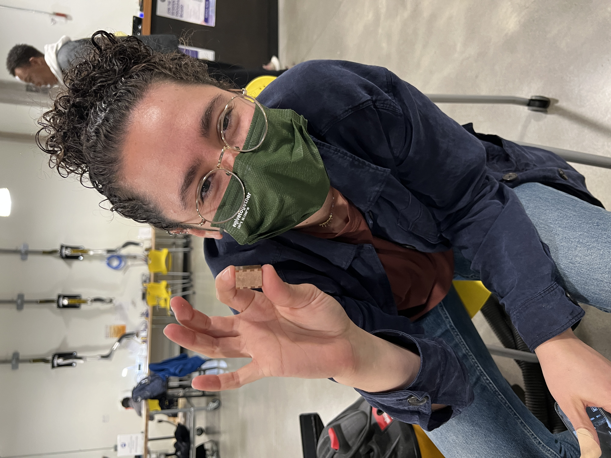
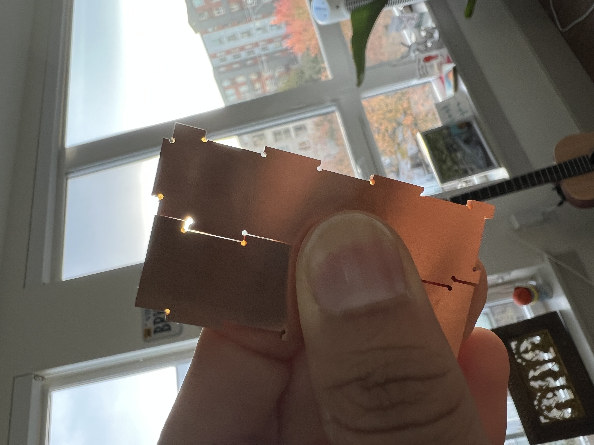

Milling at the Mill
This week’s inspiration was Noelle! I’ve realized through the last 4 weeks that visual motivation is not enough for me to survive this class. So this week when Noelle asked me if I wanted to work on the milling assignment together, I was ALL IN!
We went to the Mill on Thursday and started out with our assignment with yours truly, Rhino. My laptop gave up on me last week so I had to re-setup Rhino on my new laptop and that was a struggle in itself. It was SO hard to even have things align uniformly but having Noelle there helped because she helped with the grid snapping happening at the right amounts so I could make finer adjustments while the design still snapping to the grid.
Because I was sick and couldn’t make it to the in-class demo for the milling machines, it was great to have Noelle there because I was able to shadow her for the first bit where she tried and tested her fitment (and made the TINIEST box in the world.)

Then the ball was in my court. I exported my designs from Rhino to KiCad and eventually BantamTools while following the very detailed and helpful instructions guide created by Nadya and Junchao.
By the time it was time for me to run my designs through the mill, Junchao had also come to the Mill for office hours (SO RELIEVED!).
Noelle tested a 93% fitment on her edges for the box to fit right. We assumed that it would scale to a box of a bigger size. So I printed my first 2 sides with a 93% fitment and even though they looked quite a ways off in Rhino I assumed they would work because of our test.
SO, it turns out that the edge fitment doesn’t scale! As you can see in the picture below, my edges were VERY loose.

I measured the edges with a caliper and found that I would need to bump up the edges to ~98% for it to be snug. But I couldn’t trust myself on this because we’d talked about a 90-95% fitment ratio in class and Noelle had a 93% fitment. My inner critic went “there’s no way I’m right about this.
So I spoke with Junchao and after looking at my pieces he suggested I bump it up to 97%. He too found it odd that it didn’t fit BUT my inner-self felt SO validated, haha.

So we retried milling at 97% and it was indeed a better fit! THOUGH it still was a little loose and we probably would’ve been more snug at a ~98% fitment (and my inner-self went TOLD YOU SO!).
Unfortunately , due to time constraints I wasn’t able to make it back to the Mill after this 7-hour visit BUT I did learn 2 really cool things: (1) percentages don’t scale when it comes to edge fitment and (2) I need to trust myself more!
MAJOR thanks to Noelle for motivating me to work on this assignment instead of taking the 3D printing route and Junchao for being the best TA ever and being so chill and being genuinely curious in how my box works out! Also thanks to Mina for a great conversation while I panically tried to make my box work, haha.
Thanks for checking this out!Here are my source files.